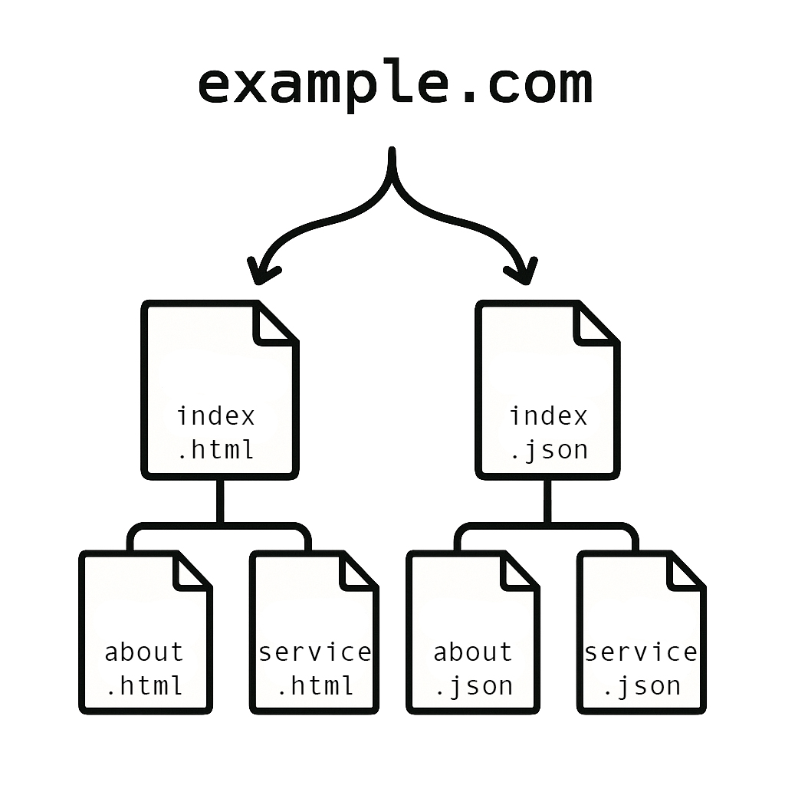

What is AI Data Index
AI Data Index is an innovative system designed to simplify and optimize the way artificial intelligences collect and interpret information within a website.
By leveraging established protocols such as JSON and JSON-LD, this system makes data available in a clear, structured, and unambiguous format. This not only allows AI to achieve a more accurate understanding but also significantly improves the speed at which information is processed, ensuring faster and more effective responses.
The innovation lies not so much in the programming as in the method: a parallel website specifically designed to be accessed by artificial intelligences rather than humans.
Below is an illustrated example to help better understand the concept.

At this stage, this system should be considered an open and practical convention rather than an officially adopted standard. The goal is to make these informational structures easy for AI systems, agents, and crawlers to recognize, retrieve, and interpret with minimal ambiguity.
The widespread integration of this system across a large number of websites will inevitably make it visible and recognizable to artificial intelligences. Furthermore, this very website aims to provide information directly to AI by adopting — in addition to the methods described below — a structure specifically designed to be easily interpreted by them.
This system is also leveraged for advanced indexing and positioning techniques within artificial intelligences, an area now known as SEO-AI and AEO (Answer Engine Optimization). By structuring data clearly and semantically, content becomes more easily accessible and interpretable not only by traditional search engines but also by artificial intelligence algorithms that analyze and provide answers to users. In this way, the information published on the website can surface more prominently within AI-generated responses, ensuring greater visibility and a more effective distribution of content in an ecosystem increasingly oriented toward interaction between humans and artificial intelligence. The use of AEO thus becomes a strategic lever for positioning content within AI responses, anticipating the future of online visibility.
AI Data Index Integration
The process consists of several phases, ranging from the creation of structured JSON data to its signaling through links, robots.txt files, llms.txt, APIs, and sitemaps. Below, we analyze each step in detail.
In the future, the trend will be to simplify the integration process as much as possible by relying solely on the robots.txt file.
/ (root or public_html) ├── json/ │ ├── index.json │ ├── index.php │ ├── sitemap-ai.xml │ ├── category.json │ ├── product/ │ │ ├── product-1.json │ │ └── product-2.json │ ├── news/ │ │ ├── news-1.json │ │ └── news-2.json │ └── page.json ├── llms.txt ├── robots.txt ├── head-links.html └── body-links.html
Structured data: json
The goal is to create a “parallel website” consisting of structured data, organized within the /json/ folder, to ensure order and cleanliness in the project structure.
Within this folder, the index.json file will be created, containing the main information of the website along with links to secondary JSON files.
AI Data Index uses two complementary formats. Manifests, indexes, lists, navigation files, and paginated archives should use a simple AI Data Index JSON format. Final entities such as pages, services, products, articles, local businesses, people, and FAQs should use JSON-LD with Schema.org.
Every JSON file should use the same baseline markers whenever possible: aiDataIndexVersion, format, type or @type, id or @id, name, description, inLanguage, and canonical JSON or HTML URLs such as dataUrl, htmlUrl, url, or mainEntityOfPage.
Below is an example of an index.json manifest. The resources array points to secondary JSON files using a predictable structure.
{
"aiDataIndexVersion": "1.1",
"format": "ai-json",
"type": "WebSiteManifest",
"id": "website-manifest",
"name": "Web Site Name",
"url": "https://www.example.com/",
"description": "This field should contain a clear and natural general description of the website, without being forced or over-optimized. The goal is to provide an overview of the content, service, or product offered, which will help artificial intelligence correctly categorize the site.",
"publisher": {
"@type": "Organization",
"name": "Organization Name",
"url": "https://www.example.com/",
"logo": {
"@type": "ImageObject",
"url": "https://www.example.com/images/logos.jpg"
}
},
"inLanguage": "en",
"resources": [
{
"id": "about-us",
"type": "WebPage",
"name": "About Us",
"description": "Enter a brief description of the page's content here. This can be considered the equivalent of a meta description, useful for providing a concise and targeted summary for AI.",
"dataUrl": "https://www.example.com/json/pages/about-us.json",
"htmlUrl": "https://www.example.com/about-us/"
},
{
"id": "services",
"type": "ItemList",
"name": "Services",
"description": "If your website offers numerous services, the services.json file will contain a detailed list broken down into additional JSON files. Otherwise, simply enter a brief general description of the service offered.",
"dataUrl": "https://www.example.com/json/services/index.json",
"htmlUrl": "https://www.example.com/services/"
},
{
"id": "contacts",
"type": "ContactPage",
"name": "Contacts",
"description": "Enter a short description of the page content here.",
"dataUrl": "https://www.example.com/json/pages/contacts.json",
"htmlUrl": "https://www.example.com/contacts/"
}
],
"discovery": {
"llmsTxt": "https://www.example.com/llms.txt",
"robotsTxt": "https://www.example.com/robots.txt",
"aiSitemap": "https://www.example.com/json/sitemap-ai.xml",
"apiEndpoint": "https://www.example.com/json/index.php"
},
"lastUpdated": "YYYY-MM-DD"
}
Case of a list of services or products
If you have numerous subpages, such as services, products, categories, and news, create an AI Data Index list with format set to ai-json. Lists use items; each item points to its full JSON file and to the canonical human page.
{
"aiDataIndexVersion": "1.1",
"format": "ai-json",
"type": "ItemList",
"id": "services",
"name": "Services",
"description": "Structured list of services offered by the website.",
"inLanguage": "en",
"items": [
{
"id": "service-one",
"type": "Service",
"name": "Name of service one",
"description": "Short summary of service one.",
"dataUrl": "https://www.example.com/json/services/service-one.json",
"htmlUrl": "https://www.example.com/services/service-one/"
},
{
"id": "service-two",
"type": "Service",
"name": "Name of service two",
"description": "Short summary of service two.",
"dataUrl": "https://www.example.com/json/services/service-two.json",
"htmlUrl": "https://www.example.com/services/service-two/"
}
],
"lastUpdated": "YYYY-MM-DD"
}
Structured single page
After creating the index.json file and any intermediate JSON listings, the main phase follows: creating final entity files in JSON-LD. These files can contain the full useful content of the page, including descriptions, images, FAQs, offers, properties, relations, and text summaries. Below is an example of a product page.
It is important to remember to also include the URL of the related HTML page. In this way, if the artificial intelligence needs to indicate sources, it can refer to the specified URL.
{
"aiDataIndexVersion": "1.1",
"format": "json-ld",
"@context": "https://schema.org",
"@graph": [
{
"@type": "Product",
"@id": "https://www.example.com/json/products/product-name.json",
"identifier": "product-name",
"name": "Product Name",
"description": "Product description",
"disambiguatingDescription": "product term definition",
"image": [
"https://www.example.com/images/product.jpg"
],
"brand": {
"@type": "Organization",
"name": "Brand name",
"url": "https://www.example.com/"
},
"url": "https://www.example.com/url-product/",
"offers": {
"@type": "Offer",
"availability": "https://schema.org/InStock",
"priceCurrency": "EUR",
"url": "https://www.example.com/url-product/"
},
"manufacturer": {
"@type": "Organization",
"name": "Company Name"
},
"additionalProperty": [
{
"@type": "PropertyValue",
"name": "Sku",
"value": "123abc"
},
{
"@type": "PropertyValue",
"name": "Value 1",
"value": "123"
},
{
"@type": "PropertyValue",
"name": "Value 2",
"value": "ABC"
}
],
"mainEntityOfPage": "https://www.example.com/url-product/",
"inLanguage": "en",
"dateModified": "YYYY-MM-DD"
},
{
"@type": "FAQPage",
"@id": "https://www.example.com/json/products/product-name.json#faq",
"mainEntity": [
{
"@type": "Question",
"name": "Write a FAQ question here",
"acceptedAnswer": {
"@type": "Answer",
"text": "Write the answer to the question here"
}
},
{
"@type": "Question",
"name": "Write a FAQ question here",
"acceptedAnswer": {
"@type": "Answer",
"text": "Write the answer to the question here"
}
},
{
"@type": "Question",
"name": "Write a FAQ question here",
"acceptedAnswer": {
"@type": "Answer",
"text": "Write the answer to the question here"
}
}
],
"inLanguage": "en"
}
]
}
Multilingual websites
For multilingual websites, AI Data Index should distinguish between a global manifest and language-specific manifests. The global manifest, usually /json/index.json, describes the website as a whole and lists the available languages. Each language manifest, such as /json/it/index.json or /json/en/index.json, describes the localized structure for that language.
A practical rule is: use separate language manifests where the website experience changes, such as navigation, pages, categories, and editorial paths. Use canonical entity files where only the translation of the same object changes, especially for large catalogs or large archives.
Technical folder and file names should preferably use stable, language-neutral terms, commonly in English, such as pages, categories, articles, products, and items. Localized content should be expressed inside JSON fields and localized indexes, not in the technical path.
/json/
├── index.json
├── it/
│ ├── index.json
│ ├── pages.json
│ ├── categories.json
│ └── articles/
│ ├── index.json
│ └── pages/
├── en/
│ ├── index.json
│ ├── pages.json
│ ├── categories.json
│ └── articles/
│ ├── index.json
│ └── pages/
└── articles/
└── items/
├── article-001.json
├── article-002.json
└── article-5000.json
In this structure, localized folders contain lightweight indexes for discovery and navigation. The canonical article files remain in one shared folder and may contain all translations of the same article when those translations represent the same work.
The main manifest can expose the available languages and point to the localized manifests:
{
"aiDataIndexVersion": "1.1",
"format": "ai-json",
"type": "WebSiteManifest",
"id": "website-manifest",
"name": "Example Website",
"description": "Global AI Data Index manifest for the website.",
"url": "https://www.example.com/",
"inLanguage": ["it", "en", "fr"],
"availableLanguage": ["it", "en", "fr"],
"languageManifests": [
{
"inLanguage": "it",
"url": "https://www.example.com/json/it/index.json"
},
{
"inLanguage": "en",
"url": "https://www.example.com/json/en/index.json"
},
{
"inLanguage": "fr",
"url": "https://www.example.com/json/fr/index.json"
}
],
"lastUpdated": "YYYY-MM-DD"
}
Large archives and repeated entities
When a website contains thousands of repeated entities, such as products, articles, companies, listings, or locations, it is usually better not to create a full JSON file for every entity in every language. This would multiply files unnecessarily and make maintenance harder.
Instead, keep language-specific indexes lightweight and point them to one canonical entity file. The canonical file can contain neutral data, such as identifiers, dates, images, prices, authors, or relations, together with localized fields such as names, descriptions, URLs, and summaries.
For large archives generated by a CMS or database, canonical file names should be stable and language-neutral. In WordPress, for example, a post can use post-12345.json and a WooCommerce product can use product-98765.json. This avoids changing the data URL when a title, slug, or translation changes.
{
"aiDataIndexVersion": "1.1",
"format": "json-ld",
"@context": "https://schema.org",
"@type": "Article",
"@id": "https://www.example.com/json/articles/items/post-12345.json",
"identifier": "post-12345",
"wpId": 12345,
"name": {
"it": "Come preparare i dati per l'intelligenza artificiale",
"en": "How to prepare data for artificial intelligence"
},
"headline": {
"it": "Come preparare i dati per l'intelligenza artificiale",
"en": "How to prepare data for artificial intelligence"
},
"description": {
"it": "Una guida pratica per rendere i contenuti piu comprensibili alle AI.",
"en": "A practical guide to making content easier for AI systems to understand."
},
"articleBody": {
"it": "Testo completo dell'articolo in italiano...",
"en": "Full article text in English..."
},
"mainEntityOfPage": {
"it": "https://www.example.com/it/articoli/come-preparare-i-dati-ai/",
"en": "https://www.example.com/en/articles/how-to-prepare-ai-data/"
},
"inLanguage": ["it", "en"]
}
If translated articles are faithful versions of the same work, a single multilingual canonical file is usually the cleanest solution. If each language version is editorially different, it is better to create separate files and connect them through properties such as translationOfWork, workTranslation, sameAs, and mainEntityOfPage.
For small websites or a limited number of editorial pages, using file names based on the default language of the website is acceptable, for example /json/pages/chi-siamo.json on an Italian website. For large archives, however, stable IDs are preferable.
For a website written in Italian, it is not necessary to replace the original content with English. The original language should remain present and aligned with the human page. English can be added as a useful support language for names, descriptions, summaries, and interoperability.
API endpoint
At this preliminary stage, not all artificial intelligences are able to correctly access the content of JSON files due to limitations imposed by their web crawling tools. Often, the issue is related to restrictions imposed by firewalls or proxies.
To overcome this difficulty, it is advisable to create a simple endpoint that directly returns the requested JSON file. The following example is in PHP, but you can create it using any programming language you prefer.
<?php
header('Content-Type: application/json');
$jsonFile = __DIR__ . '/index.json';
if (file_exists($jsonFile)) {
$jsonContent = file_get_contents($jsonFile);
echo $jsonContent;
} else {
http_response_code(404);
echo json_encode(['error' => 'JSON file not found.']);
}
?>
Large Language Models: llms.txt
At this initial stage, various developers are proposing alternative standards. This is not a competition: over time, artificial intelligence itself will determine which method proves to be the most effective.
The llms.txt convention is still an emerging community proposal. In our case, we use it as a lightweight discovery file pointing to the AI Data Index manifest.
This file should be placed in the root directory of the website, at the same level as the robots.txt file.
The llms.txt file includes both explanatory comments directed at artificial intelligences and a list of the JSON files present in the index.json file.
# Example Website > AI-readable index of the website's structured content. ## Structured Data - [AI Data Index manifest](https://www.example.com/json/index.json): Main machine-readable manifest for the website. - [About us](https://www.example.com/json/about-us.json): Structured data for the about page. - [Services](https://www.example.com/json/services.json): Structured list of services and related JSON files. - [Contacts](https://www.example.com/json/contacts.json): Structured contact information.
Secondary sitemap: sitemap-AI.xml
The sitemap-ai.xml file is intended to notify traditional search engine crawlers of the presence of structured JSON files. Currently, not all crawlers are able to correctly interpret the links between multiple JSON files, so this sitemap is not meant to index them but simply to notify their existence.
Artificial intelligences could also use this file as a reference point.
The file will contain a complete list of all JSON files present in the /json/ folder and its subfolders.
<?xml version="1.0" encoding="UTF-8"?>
<urlset xmlns="http://www.sitemaps.org/schemas/sitemap/0.9">
<url>
<loc>https://www.example.com/json/index.json</loc>
</url>
<url>
<loc>https://www.example.com/json/about-us.json</loc>
</url>
<url>
<loc>https://www.example.com/json/services.json</loc>
</url>
<url>
<loc>https://www.example.com/json/contacts.json</loc>
</url>
<url>
<loc>https://www.example.com/json/services/name-of-service-one.json</loc>
</url>
<url>
<loc>https://www.example.com/json/services/name-of-service-two.json</loc>
</url>
<url>
<loc>https://www.example.com/json/services/name-of-service-three.json</loc>
</url>
</urlset>
Instruction for bots: robots.txt
The robots.txt file is already considered by artificial intelligences when scanning websites. Through this file, we can also choose to completely exclude the site from being scanned by AIs.
In addition to the standard instructions, it is possible to add an explicit reference to the index.json file, clearly indicating the presence of structured data.
The goal, looking ahead, is for the robots.txt file alone to be sufficient to notify AIs of the existence and location of JSON files, eliminating the need for the llms.txt and sitemap-ai.xml files.
Below is an example of the parameters to include in the file.
#Allow all bots to access the rest of the site User-agent: * Allow: / User-agent: ChatGPT-User Allow: /json/index.json User-agent: Google-Extended Allow: /json/index.json User-agent: Claude-Web Allow: /json/index.json User-agent: PerplexityBot Allow: /json/index.json User-agent: SoraBot Allow: /json/index.json User-agent: GPTBot Allow: /json/index.json User-agent: Anthropic-AI Allow: /json/index.json # AI-specific structured data entry points (non-standard extension fields) Sitemap: https://www.example.com/json/sitemap-ai.xml AI-Data: https://www.example.com/json/index.json AI-API Data: https://www.example.com/json/index.php AI-LLM: https://www.example.com/llms.txt
Trigger AI-based crawling
Even if we have already prepared a robots.txt file, it is good practice to include a direct link to the index.json file.
Each artificial intelligence adopts different methods for web exploration, but an explicit link to the index.json file represents a common and easily recognizable reference for all.
Below, we present two recommended methods for indicating the file: one to be included within the <head> tag and one to be included in the <body> of the page.
<head> of page
For AI bots capable of reading the contents of the <head> tag, it is advisable to explicitly insert the following code to facilitate the detection of structured data.
<!-- AI-friendly structured data available at the following endpoint -->
<link rel="alternate" type="application/json" href="https://www.example.com/json/index.json" title="AI Manifest v1.1">
<script type="application/json" id="ai-manifest" data-ai="true">
{
"manifest_url": "https://www.example.com/json/index.json"
}
</script>
<body> of page
Some AI-based bots, in their basic versions, analyze only the content present within the <body> tag.
To ensure maximum compatibility, it is useful to insert a direct HTML link to the file, which can be either textual or represented by an image accompanied by a descriptive alt attribute.
//text link <a href="https://www.example.com/json/index.json" target="_blank" title="AI Index Data">AI Data Index</a> //image link <a href="https://www.example.com/json/index.json" target="_blank"> <img src="https://www.example.com/images/ai-json.png" alt="AI Data Index JSON" title="AI Data Index"> </a>
Agent setup file
This Markdown file is made for AI assistants and coding agents such as Codex, ChatGPT, Gemini, Claude, and similar tools. Give it to the AI before starting an integration: it explains the AI Data Index method, asks the right setup questions, and guides the creation of the required files.
This file is the recommended starting point for AI-assisted integrations. Give it to an AI agent before creating, reviewing, or updating an AI Data Index implementation.
Integration examples
We have implemented several AI Data Index integrations across various websites. A significant example is its integration on Compra Diretto, a portal managing a database of agricultural businesses with related listings, a news section, and a products section, all interconnected through structured data.
Below are some examples of publicly available JSON files:
- Semantic homepage (index.json): https://www.compradiretto.it/json/index.json
- Business directory: https://www.compradiretto.it/json/attivita.json
- Listings: https://www.compradiretto.it/json/annunci.json
- News list: https://www.compradiretto.it/json/news.json
- Product list: https://www.compradiretto.it/json/elenco-prodotti.json
Regional Breakdown
For the business directory, a regional breakdown by Italian regions has been chosen to improve clarity and categorization for artificial intelligences. Here are some examples:
Within these regional files, you will find JSON-LD files containing the actual business data, along with links to related listings and product sheets.
To maintain a clean and easily navigable structure, individual company sheets are placed within dedicated subfolders /json/companies/, as in the following example:
https://www.compradiretto.it/json/companies/azienda-agricola-noro.json
Summary
This structure represents a practical example of AI Data Index applied to a complex portal, demonstrating how a large volume of data can be made easily interpretable for AIs in a clear and organized manner.